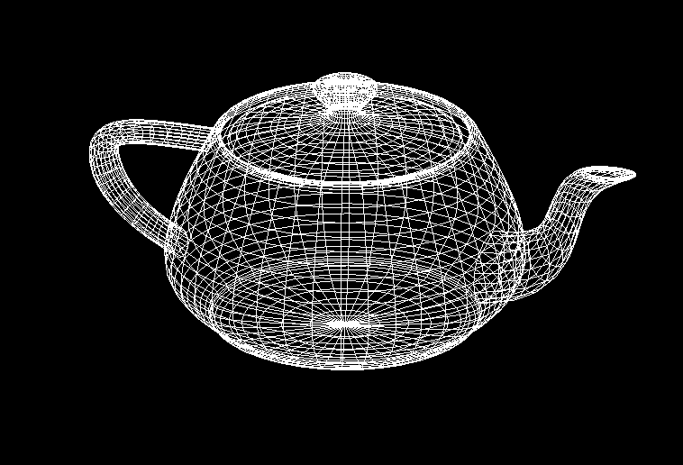
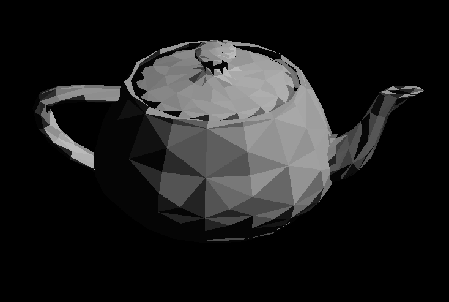
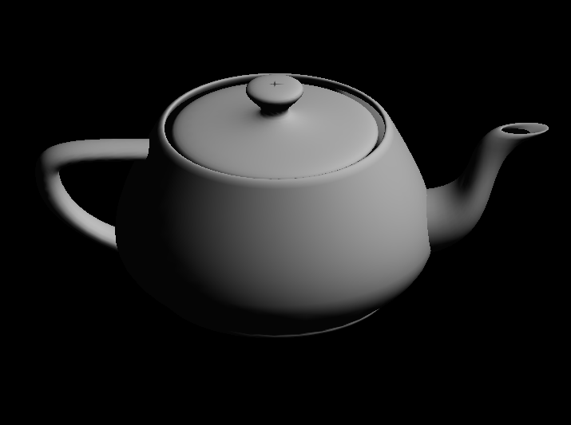
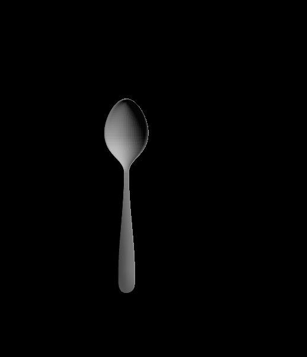

Assignment 3: Bezier Curves
Group members: Elizabeth Ye (me) and Kevin Chen.
Comments: Uniform tesselation. 0.1 step size. Wireframe.
From top directory: From top directory: ./as3 teapot.bez .1 -u

Comments: Uniform tesselation. 0.1 step size. Wireframe. (from a different angle)
From top directory: From top directory: ./as3 teapot.bez .1 -u
Comments: Uniform tesselation. 0.1 step size. Flat shading.
From top directory: From top directory: ./as3 teapot.bez .1 -u
Comments: Uniform tesselation. 0.1 step size. Smooth shading.
From top directory: ./as3 teapot.bez .1 -u
Comments: Uniform tesselation. 0.5 step size. Wireframe.
From top directory: ./as3 teapot.bez .5 -u
Comments: Uniform tesselation. 0.5 step size. Flat shading.
From top directory: ./as3 teapot.bez .5 -u
Comments: Uniform tesselation. 0.5 step size. Smooth shading.
From top directory: ./as3 teapot.bez .5 -u
Comments: Adaptive tesselation. 0.1 threshold. Wireframe.
From top directory: From top directory: ./as3 teapot.bez .1 -a
Comments: Adaptive tesselation. 0.1 threshold. Flat shading.
From top directory: From top directory: ./as3 teapot.bez .1 -a
Comments: Adaptive tesselation. 0.1 threshold. Smooth shading.
From top directory: From top directory: ./as3 teapot.bez .1 -a
Comments: Adaptive tesselation. 0.05 threshold. Wireframe.
From top directory: From top directory: ./as3 teapot.bez .05 -a

Comments: Adaptive tesselation. 0.05 threshold. Flat shading.
From top directory: From top directory: ./as3 teapot.bez .05 -a

Comments: Adaptive tesselation. 0.005 threshold. Smooth shading.
From top directory: From top directory: ./as3 teapot.bez .005 -a
Comments: Uniform tesselation. 0.005 step size. Wireframe.
From top directory: From top directory: ./as3 spoon.bez .005 -u
Comments: Adaptive tesselation. 0.005 threshold. Wireframe.
From top directory: From top directory: ./as3 spoon.bez .005 -a

Comments: Uniform tesselation. 0.05 step. Smooth shading.
From top directory: From top directory: ./as3 spoon.bez .05 -u
----------------------- extra credit
note: the .scene files contain multiple patches within it. Each set of patches is separated by a "# #", and each of set of patches defines a different object.